Why Clean Data Is the Foundation of Every Good Analysis
Garbage in, garbage out. Before any chart or dashboard can be trusted, the underlying data must be clean, consistent, and complete. Here's how I approach data cleaning on every project.
Young M Insight
My name is Fidelis chukwudulue, founder of Young M Insight. I specialize in transforming raw data into meaningful insights that drive smart decisions.
I work with data to uncover patterns, detect trends, and present results through dashboards that support smart decision-making. Whether it's cleaning messy datasets, writing SQL queries, or building interactive Power BI reports I turn numbers into stories.
Projects Completed
Tools Mastered
Years Experience
Data Driven
A clear, proven process that turns your raw data into actionable decisions.
I start by listening. I take time to understand your business, your goals, and the data you have available so the analysis is shaped by what actually matters to you.
Raw data is rarely ready. I remove errors, handle missing values, fix inconsistencies, and structure the dataset so it is reliable and ready for meaningful analysis.
Using Excel, MySQL, and Power BI, I dig into the data identifying patterns, trends, outliers, and relationships that answer your core questions.
I present findings in a clear, visual format dashboards, charts, or written reports so you can understand the story behind your data and act on it confidently.
Here's how I can help your business or project grow with data.
I dig into your raw data to find patterns, outliers, and trends that answer your business questions.
I remove errors, duplicates, and inconsistencies so your data is reliable and ready for analysis.
I build interactive Power BI dashboards that make your data easy to understand at a glance.
I write efficient MySQL queries to extract, filter, and summarize data from large databases.
I build spreadsheet models, pivot tables, and charts that turn complex figures into clear reports.
I deliver written reports that translate data findings into clear, actionable recommendations.
A selection of real-world data projects I've completed.
Analyzed student academic records to identify performance trends, detect at-risk students, and provide actionable recommendations for educators using Excel and Power BI.
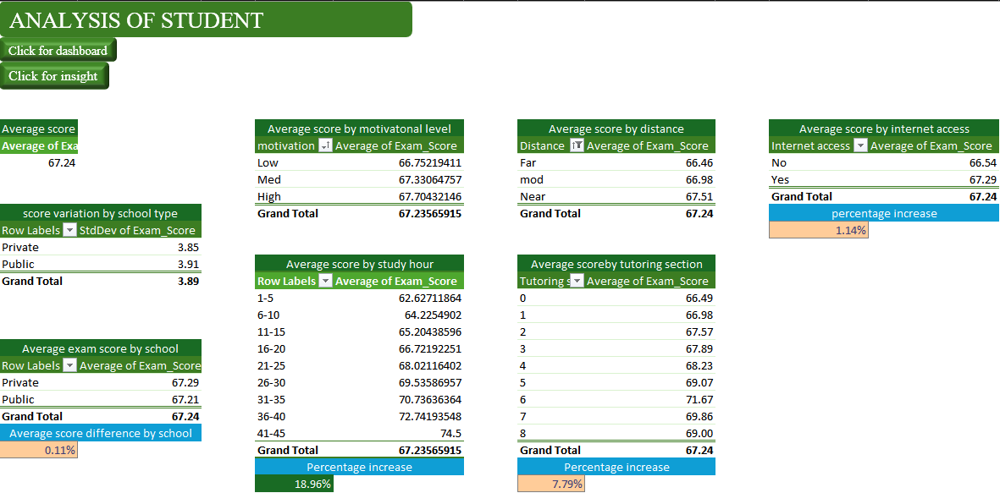
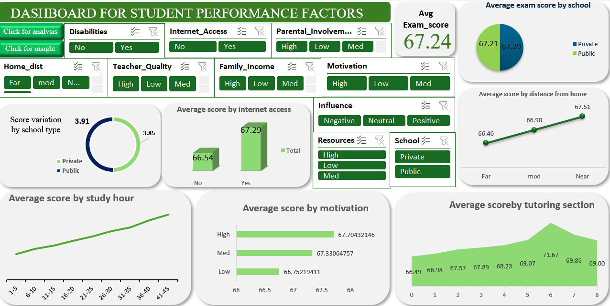
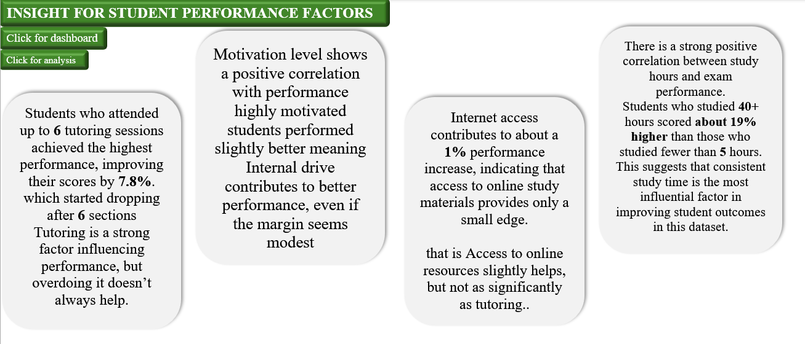
Examined financial transaction records to uncover spending patterns, flag anomalies, and build an interactive dashboard for real-time monitoring using MySQL and Power BI.
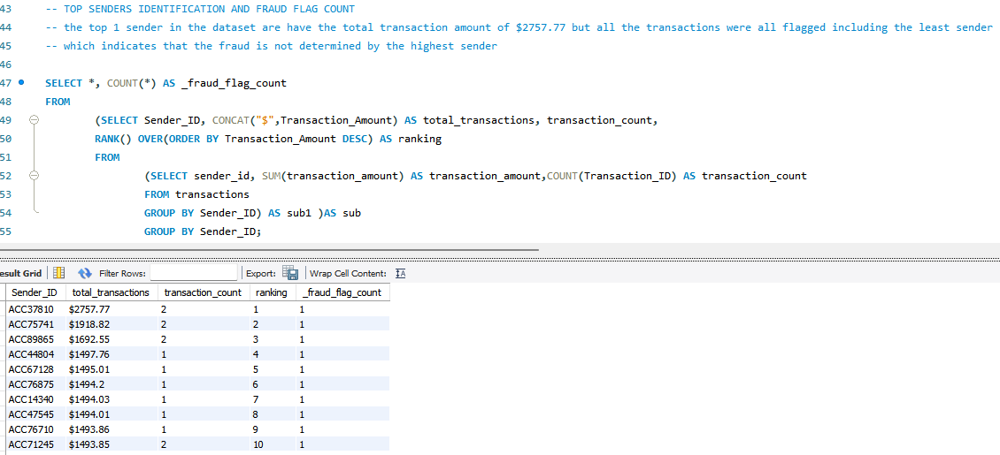
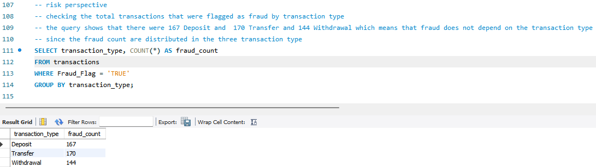
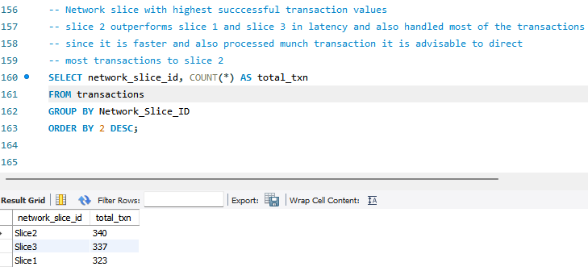
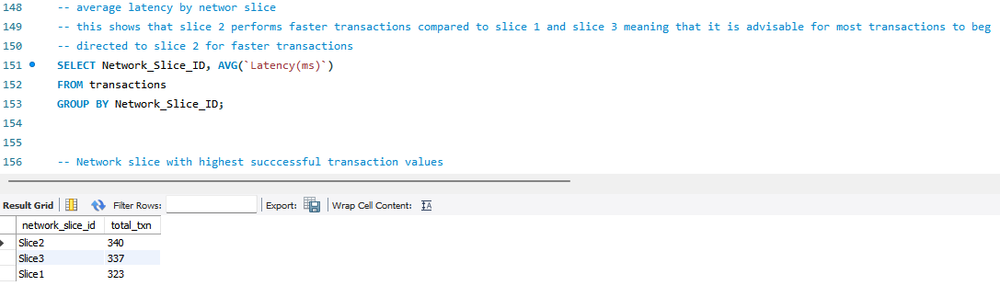
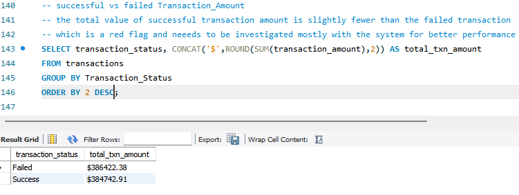
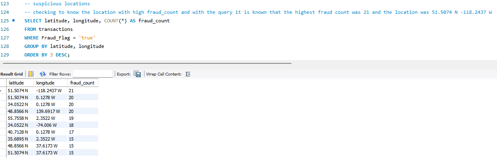
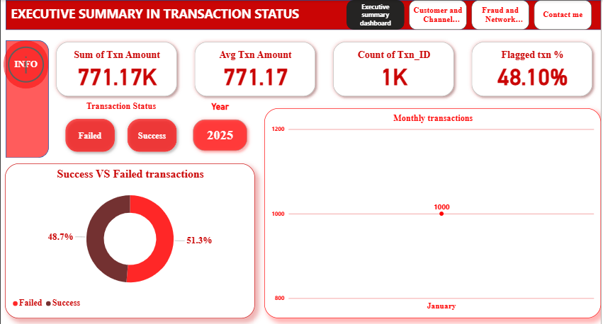
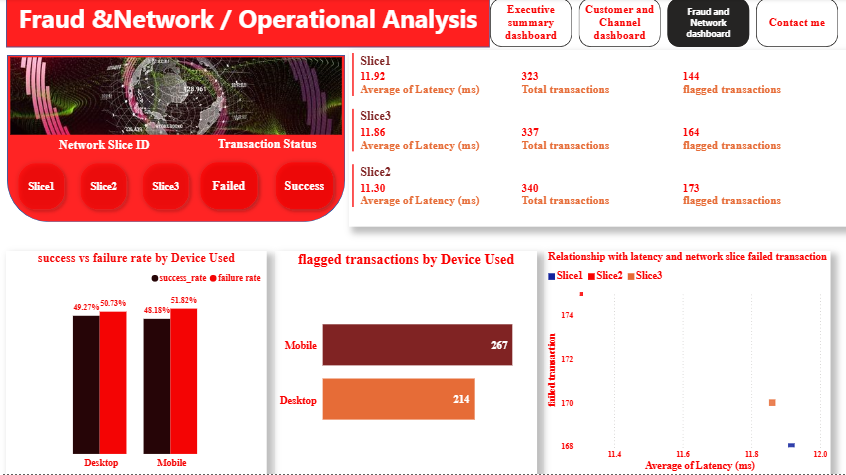
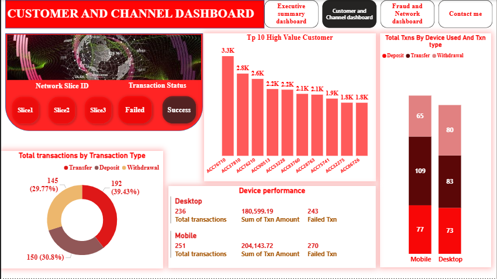
Continuous learning keeps my skills sharp and current.
Completed advanced Excel training covering pivot tables, VLOOKUP, data modelling, and reporting.
Trained in writing SQL queries for data extraction, aggregation, joins, and subqueries.
Completed Power BI training in DAX, data modelling, relationships, and interactive visualizations.
Feedback from clients and collaborators.
"Fidelis delivered a clean, professional dashboard that made our data instantly understandable. Highly recommend his work."
"His student performance report was thorough and insightful. He clearly knows how to turn numbers into useful decisions."
"Young M Insight helped us understand our transaction data in a way we never could before. Very professional service."
Short reads on data, analytics, and lessons from real projects.
Garbage in, garbage out. Before any chart or dashboard can be trusted, the underlying data must be clean, consistent, and complete. Here's how I approach data cleaning on every project.
A dashboard cluttered with numbers is not insight — it's noise. I break down the five most common design mistakes in Power BI and how to fix each one for clearer, more actionable reports.
Excel is powerful, but it has limits. If your data is growing, duplicating, or slowing down your team, it may be time to move to a relational database. Here is how to know when you're ready.
Have a project in mind? Let's talk data.
Want to know more about my experience?
⬇ Download My CV